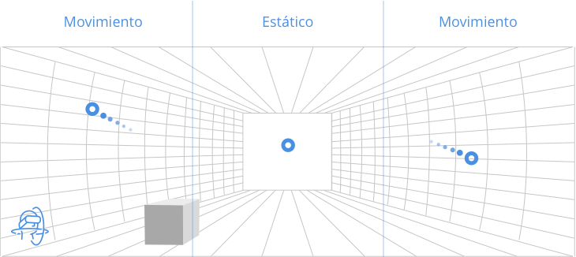

Cursores
Cursor de visión o gaze-pointer
El gaze-pointer o puntero de mirada, es el puntero que el usuario controla con su orientación de cabeza e interactúa con objetos o elementos de interfaz de usuario como lo harían con un puntero del ratón. El evento "clic" puede venir desde un botón de gamepad o toque en el touchpad de Gear VR.
Cursor de visión con rastro
Contexto
¿Que problema resuelve?
Mejora el seguimiento del cursor mientras el usario navega con el control de mirada.
Solución
Dotar a el cursor de un rastro de partucilas cuando está en movimiento.
Diseño
Ver ejemplo (Adobe Aniamte CC) WEBGL
Ver ejemplo FRAMER
Cursor que afecta a la malla y al entorno
Otra manera de dejar rastro es que el cursor interactue por defecto con el entorno afectando al entorno. Esto depende mucho del contexto pero puede ayudar a crear experiencias muy interesantes e inmersivas (cesped, agua, mallas, arena, fichas)

Contexto
¿Que problema resuelve?
Ayuda a mejorar la experiencia y la sensacción de inmersión dependiendo del contexto
Solución
Rastro en la malla o en los objetos que se cruzan con el cursor de mirada
Diseño
Ver ejemplo WEBGL
Imantación suave del cursor al objeto accionable
El objeto accionable tiene un radio de acción, similar al magnetismo, en el que el cursor se queda pegado y evita que se salga del área de acción ante movimientos leves del usuario
Contexto
¿Que problema resuelve?
Evita que el usuario pierda la posibilidad de actuar sobre un elemento por pequeños movimientos involuntarios o naturales.
Solución
Cuando el gaze pointer se acerca al elemento interactivo se queda pegado a este, como si el elemento hubiera atraido al puntero y este se quedará pegado a él siempre que el movimiento sea leve. De esta mananera facilitamos la interacción notablemente. Cuando el usuario cambie el punto de vista, el gaze pointer se separará del elemento interactivo y volverá al centro
Diseño
Ver ejemplo FRAMER
El cursor cambia dependiendo de la acción
Dependiendo del contexto, el gaze pointer cambiará su forma indicando que acción voy a realizar cuando se sitúa sobre el elemento interactivo

Contexto
¿Que problema resuelve?
No es para resolver un problema en concreto pero mejora la inmersión y la usabilidad de la aplicación
Solución
Cuando el gaze pointer se situa sobre el elemento accionable o su zona activa cambiará de forma indicando lo acción que voy a realizar. Ej. Un punto dmira si voy a disparar, unos pasos o una flecha si voy a avanzar, una lupa para bucar, etc.
Diseño
Ver ejemplo FRAMER
El cursor se adapta a las normales del entorno
Cuando podemos interactuar sobre distintos elemntos en una escena o queremos indicar con precisión dónde se encuentra el puntero, este se adatará a las normales de la malla
Contexto
¿Que problema resuelve?
Ayuda a mejorar la experiencia, indica con mayor precisión dónde se encuentra el cursor, sobre que elemento podemos interactuar o hacia que punto concreto vamos a desplazarnos
Solución
El cursor girará (a poder ser en los tres ejes), adaptándose a las normales de la malla 3D.
Diseño
Ver ejemplo WEBGL
Elementos accionables
Botones, menús y objetos con los que podemos interactuar
En VR Móvil dispositivo las interacciones están muy limitadas y actuar con precisión también es dificil. Es por esto por lo que los elementos interactivos han de facilitar y dar la información necesaria al usuario para que tenga una experiencia satisfactoria dentro de nuestro sistema VR
¿Qué acción va a realizar?
Contexto
¿Que problema resuelve?
Debido a la complejidad de la interacción en VR Móvil, los elementos interacctivos no sólo deben estar destacados sino que deben indicar, bien con un texto o bien con la forma del elemento (dependiendo del contexto y de la acción), que ocurrirá cuando interactuamos con él.
Solución
Los elementos accionables deben tener un label indicando que va a ocurrir cuando interactue, o bien una forma (forma, color, animación) suficientemente clara para indicar al usuario que acción realiza cada elemento
Es muy importante mantener coherencia formal, funcional y semántica entre todos los elementos interactivos
Es importante testear estos elementos para asegurarnos que se ven correctamente y que no ocurren ciertos errores:
- Que el texto se lee (legibilidad)
- Que el texto se lee siempre. Cuando nos movemos por el entorno el label del elemento siempre debe colocarse de modo que el usuario pueda leerlo
- Si el elemento una dirección, siempre deberá indicar la dirección adecuada, independientemente del punto de vista del usuario
Diseño
Ver ejemplo. WEBGL
Esto está cerca, esto está lejos
Contexto
¿Que problema resuelve?
En un entorno 3D puede que no podemos mostrar todos los elementos accionables con sus etiquetas a la vez, porque además de cargar mucho el interfaz puede generar confusión al usuario y una experiencia terrible
Solución
El usuario tiene un área límite de actuación. Dentro de ese área, los elementos accionables no sólo quedarán destacados sino que podremos leer su etiqueta o distinguir cláramente la forma que indica la acción.
Fuera de este área de acción, si hay elementos sobre los que podré actuar, tenemos que indicar que "más allá" hay elementos accionables y pdoré actuar sobre ellos cuando me acerque.
Diseño
Ver ejemplo. WEBGL
Estado "Over"
Contexto
¿Que problema resuelve?
Indicar al usuario que puede actuar sobre algún elemento y que está dentro del área de acción
Solución
Siempre que el Gaze Pointer pase sobre un elemento interactivo, este cambiará su estado ya sea con un cambio de color, tamaño o forma
Debemos tener en cuenta los siguientes aspectos:
- Debe haber coherencia entre los distintos estados over de nuestro sistema
- Si hacemos un cambio de tamaño, es mejor hacerlo más grande on Over, para evitar el efecto "Parpadeo"
- Lo mismo pasa si cambiamos la forma o rotamos el elemento
También es buena idea cambiar el cursor.
Diseño
Ver ejemplo. WEBGL
2 segundos de "click" (más o menos)
Contexto
¿Que problema resuelve?
En VR Móvil, cuando no tengo ningún dispositivo extra para interactuar con el interfaz, la principal (o única) interacción, es mantener el gaze pointer sobre el elemento interactiva un tiempo determinado
Solución
Después de hacer muchas pruebas hemos comprobado que 2 segundos es el tiempo adecuado (más o menos). Más tiempo se hace largo y menos es problemático, ya que el usuario a veces está mirando que pasa cuando interactua sobre el elemento
Es muy importante indicar el tiempo de progreso de una manera clara al usuario.
Diseño
Ver ejemplo. WEBGL
Menú desplegable en over
Contexto
¿Que problema resuelve?
Bien cuando el elemento es un menú con distintas opciones o bien cuando sobre el propio objeto pueda realizar diferentes acciones, tenemos que facilitar la posibilidad de actuar sobre esas opciones
Solución
Las distintas acciones se desplegarán justo al pasar por encima el elemento principal.
Es importante que tengamos en cuenta las siguientes cuestiones:
- El elemento principal se mantendrá con su estado "over" mientras las opciones secundarias permanezcan desplegadas
- Estos nuevos elementos interactivos tienen que cumplir todas las normas que hemos descrito sobre los elementos interactivos. (Over, Label, click en 2 segundos, coherencia formal, ...)
- Los nuevos elementos tienen que mostrar claramente que son opciones del elemento principal. Para esto lo normal es que salgan desde ese elemento y que se mantengan relacionados con ese elemento de una o varias maneras (Forma, color, distancia, ...)
- Una vez desplegado el submenú, debe haber una área de acción que mientras que el usuario se mantenga en ella, el menú permanecerá desplegado y se ocultará cuando el gaze pointer se aleje lo sufuciente.
- Como el elemento principal no es el que tiene las interacciones, si no son los que se desplegan, ese elemento principal no debe tener imantación del gaze pointer
Diseño
Ver ejemplo. WEBGL
El menú, sigue al usuario
Contexto
¿Que problema resuelve?
En un entorno 360, queremos evitar que el usuario pierda elementos importantes de interacción a los que es habitual que quiera recurrir a menudo
Solución
La solución que proponemos es un menú que se mantiene sobre la vertical de la mirada del usuario un poco por encima de línea del horizonte. El menú permanece oculto y aparece cuando el usuario mira hacia el menú este se hace visible
El comportamiento del menú será distinto si tiene una única opción o si tiene varias
Diseño
Ver ejemplo. FRAMER
Tener un botón de escape siempre a mano (o a pie)

Contexto
¿Que problema resuelve?
En un entorno 360 o en un espacio virtual, como es más fácil perderse y el usuario está dentro de nuestro interfaz, es importante dar al usuario la opción de salir o escapar en cualquier momento.
Solución
Una buena manera de solucionar esto es tener un botón de escape o de home siempre en los pies del usuario, de tal manera que independientemente de dónde se encuentre, siempre tenga un acceso rápido a esta opción
Es importante tener en cuenta lo siguiente
- Este botón o elemento interactivo debe cumplir todas las normas de elementos de interacción
- El botón siempre tiene que estar orientado al usuario para que este lo lea siempre correctamente
- Es una buena práctica, indicar al usuario al inicio que dispone de esa opción
Diseño
Ver ejemplo. FRAMER
Menú permanente a los pies del usuario
Contexto
¿Que problema resuelve?
La necesidad de tener un menú siempre accesible al usuario nos hace buscar múltiples soluciones dependiendo del contexto y de la cantidad e intems que tenga ese submenú
Solución
Además de las ya indicadas, una buena solución para tener una serie de opciones siempre accesibles es un menú despegable en vertical a partir de un botón situado a los pies del usuario
Esta opción es muy interesante por:
- Siempre tenemos un menú accesible en el mismo sitio
- No hay elementos en medio de la escena que puedan molestar
- Es muy útil cuando el submenú tiene muchos elementos
- Como se despliega en vertical, limitamos el movimiento de la cabeza en un solo eje para acceder a los items del submenú, lo que facilita la interacción al usuario
Mediaplayers
La realidad virtual es más que un formato, es un metaformato en el que podemos encontrar múltiples elementos que tienen su propia interacción
Uno de los más habituales que nos encontraremos son los mediaplayers, en los que podremos ver vídeo dentro de nuestro espacio 3D. Es por esto por lo que hemos querido dedicar una sección especial a estos elementos
De frente a la pantalla
Contexto
¿Que problema resuelve?
Es muy posible que dentro de nuestro entorno querramos mostrar contenido audiovial. Es importante que el usuario sepa que el vídeo se va a reproducir y que cuando empiece a reproducirse, el punto de vista del usuario le permita ver cómodamente el vídeo
Solución
Cuando se vaya a iniciar la reprodución del vídeo la cámara se colocará de tal manera que permita al usuario ver bien el contenido multimedia
Es importante tener en cuenta los siguientes factores:
- Si el vídeo se va a reproducir por la acción directa del usuario con algún elemento del entorno, este debe indicar previamente que se va a reproducir un vídeo. Ya sea con label o con la forma del elemento
- Hay que testear como se va a realizar el movimiento de la cámara para evitar mareos y otras molestias
- Se recomienda que el usuario pueda controlar la reproducción del vídeo
Diseño
Ver ejemplo. Ejemplo